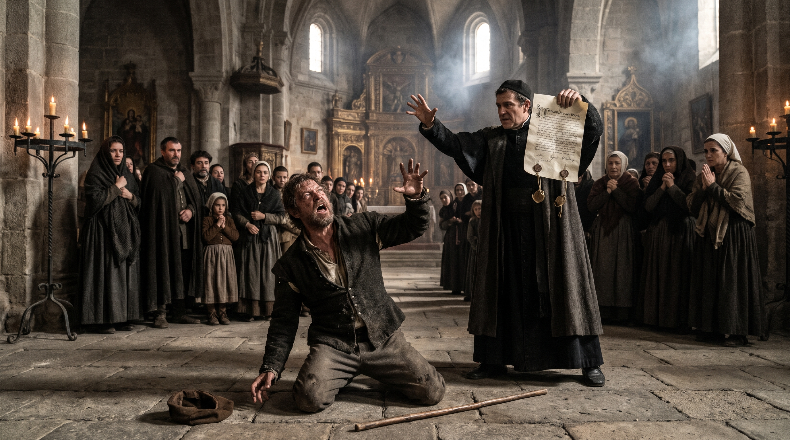

La vida de Lazarillo de Tormes
El buldero
Tratado quinto · Narración y presentación
Parcial de Literatura 4to
Tratado Quinto · Parte 1
La llegada al pueblo
«En esta ocasión, la fortuna me llevó a servir a un buldero, hombre muy astuto y desenvuelto, que siempre encontraba ingeniosas maneras de vender sus bulas. Al llegar a los pueblos, procuraba ganarse primero el favor de los clérigos, para que estos ayudasen a su negocio».
Tratado Quinto · Partes 2-1 y 2-2
El regalo al cura y la conversación
«Así, nada más llegar, ofrecía a los curas pequeños presentes, como frutas de temporada. Con estas atenciones buscaba tenerlos de su parte, para que llamasen a sus feligreses y los animasen a tomar las bulas».
Tratado Quinto · Parte 3
El buldero no consigue vender
«Mas, aunque empleaba todas sus habilidades y predicaba durante varios días, en aquel lugar nadie parecía dispuesto a comprar sus bulas. Viendo que por las buenas no conseguía su propósito, mi amo comenzó a pensar en otras maneras de alcanzar su objetivo».
Tratado Quinto · Parte 4-1
El acuerdo con el alguacil
«Aquella noche, después de cenar, mi amo y el alguacil se pusieron a jugar a la colación. Y, como después pude comprender, ambos habían preparado una astuta invención para engañar a los vecinos y conseguir que comprasen las bulas».
Tratado Quinto · Parte 4-2
El enfrentamiento en la taberna
«Durante el juego comenzaron a reñir y a decirse malas palabras. Mi amo llamó ladrón al alguacil, y este lo acusó de falsario, asegurando que las bulas que predicaba eran falsas. La disputa creció de tal manera que ambos llegaron a echar mano a sus armas. Los huéspedes y vecinos tuvieron que intervenir para impedir que se matasen».
Tratado Quinto · Parte 4-3
La calma después de la pelea
«Finalmente, los vecinos apartaron al alguacil y consiguieron llevarlo a otro lugar. Mi amo quedó muy enojado y, después de que le rogasen que olvidase el asunto, todos nos fuimos a dormir».
Tratado Quinto · Parte 5
El sermón y el supuesto milagro
«Venida la mañana, mi amo se dirigió a la iglesia para predicar y despedir la bula. Mas los vecinos, que ya desconfiaban de ella, recordaban las acusaciones de la noche anterior. En medio del sermón entró el alguacil y declaró públicamente que las bulas eran falsas, confesando que había ayudado a mi amo esperando compartir las ganancias».
«Después de arrojar su vara al suelo, mi amo se arrodilló y pidió a Dios que mostrase la verdad mediante un milagro. Apenas acabó su oración, el alguacil cayó al suelo, dando voces, retorciéndose y echando espuma por la boca. Los presentes quedaron aterrados y suplicaron a mi amo que socorriese al desdichado».
«Entonces, el buldero bajó del púlpito y pidió a todos que rogasen por él. Tras una larga oración, le pusieron la bula sobre la cabeza y, poco a poco, el alguacil volvió en sí».

Tratado Quinto · Parte 6-1
El arrepentimiento del alguacil
«Cuando recuperó el juicio, el alguacil se arrojó a los pies de mi amo y le pidió perdón. Confesó que había hablado por boca y mandato del demonio, tanto por vengarse de él como porque el demonio recibía gran pena del bien que se hacía al tomar aquella bula. Mi amo lo perdonó y ambos hicieron las paces».
Tratado Quinto · Parte 6-2
La venta de las bulas
«Después de lo sucedido, todos creyeron haber presenciado un verdadero milagro. Tanto fue el temor y la devoción que despertó aquel acontecimiento, que casi no quedó persona en el lugar que no tomase una bula: hombres y mujeres, muchachos y muchachas».
Tratado Quinto · Parte 7-1
Lázaro descubre el engaño
«La noticia se extendió por los pueblos vecinos, donde la gente acudía a comprar las bulas sin necesidad de sermón alguno. Yo mismo quedé espantado al principio y creí que todo había sucedido como lo vi. Pero, al observar después las risas y burlas que mi amo y el alguacil se hacían entre sí, comprendí que todo había sido preparado por la astucia de mi amo».
Tratado Quinto · Parte 7-2
La última conversación entre Lázaro y el buldero
«Y, aunque era muchacho, me maravilló aquella invención, y pensé para mis adentros cuántos engaños semejantes harían aquellos burladores entre la gente inocente. Finalmente, permanecí con este quinto amo cerca de cuatro meses, durante los cuales también pasé muchas fatigas».
Presentado por
Anderson Correa
Profa. Alejandra Cañete
Literatura 4-1 · Plan 1994
Liceo 45 Víctor Bersanelli
27 de octubre del 2026
Lazarillo de Tormes · Tratado V
Fin
Aquí termina el relato del buldero, quinto amo de Lázaro.